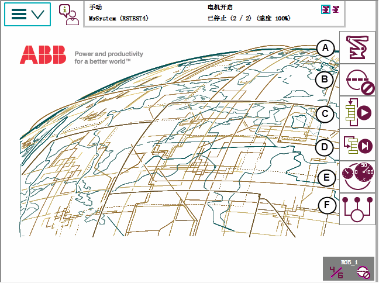

QuickSet（快速设置）菜单提供了比使用 Jogging（微动控制） 视图更加快捷的方式来在各个微动属性之间切换。
菜单上的每个按钮显示当前选择的属性值或设置。
在手动模式中，快速设置菜单按钮显示当前选择的机械单元、运动模式和增量大小。
本节介绍"快速设置"菜单中的按钮。

A
机械单元，请参见Quickset（快速设置）菜单，Mechanical unit（机械装置）。
B
增量，请参见Quickset（快速设置）菜单，Increment（增量）。
C
运行模式，请参见Quickset（快速设置）菜单，Run Mode（运行模式）。
D
单步模式，请参见Quickset（快速设置）菜单，Step Mode（步进模式）。
E
速度，请参见Quickset（快速设置）菜单，Speed（速度）。
F
任务，请参见Quickset（快速设置）菜单，Tasks（任务）。